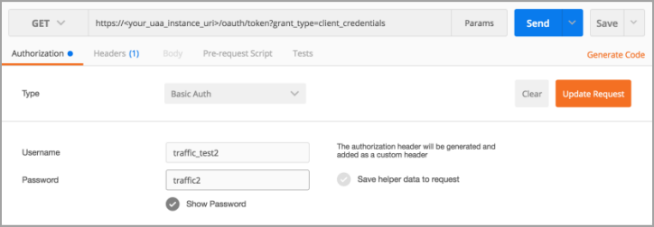
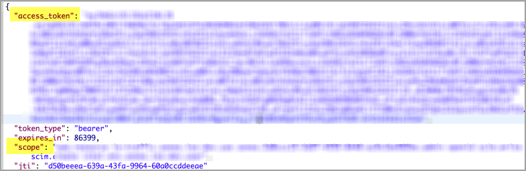
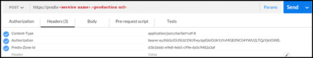
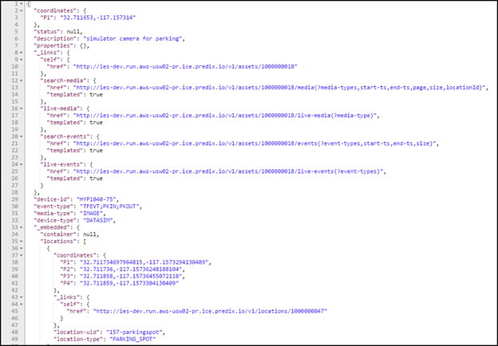

About this task
This task is two parts:
- Getting a bearer token from UAA, which is used in the second part.
- Making sure client applications can access Intelligent Environment model data using Intelligent Environment service REST API endpoints.
Procedure
Getting a Bearer Token from UAA
- In a REST client, Authorization tab:
- Choose the GET method.
- Enter the URI of your UAA instance, such as: https://<your_uaa_instance_uri>/oauth/token?grant_type=client_credentials
Note: Make sure you include grant_type=client_credentials in your URI.
- Add the following information as shown in the graphic below the table.
Figure: REST Client Authorization Tab

- Click Send.
- Select the access_token that is returned and copy it to your clipboard. This is the token that you need in Step 2c below, for Authorization.
Figure: REST Client Bearer Access Token

- Verify that the scope given is the same as used in the VCAP_SERVICES environment variable.
Ensuring client apps can access IE data
- In a REST client:
- Choose the POST method.
- Enter the URI of your service instance, from the VCAP_SERVICES environment variable.
- Add the following HTTP headers per the graphic below the table:
| Content-Type |
Enter the value application/json. |
| Authorization |
Enter the token you receive from UAA in the form of Bearer <token from trusted issuer> in Step 1e above. |
| Predix-Zone-Id |
Enter the ID required to make REST calls, using the instanceId value specified in the VCAP-SERVICES environment variable. |
Figure: Example of HTTP Headers

- Enter well-formed JSON in the body of your request.
Figure: Example of Well-formed JSON

 © 2015-2016 General Electric Company. All rights reserved.
© 2015-2016 General Electric Company. All rights reserved.